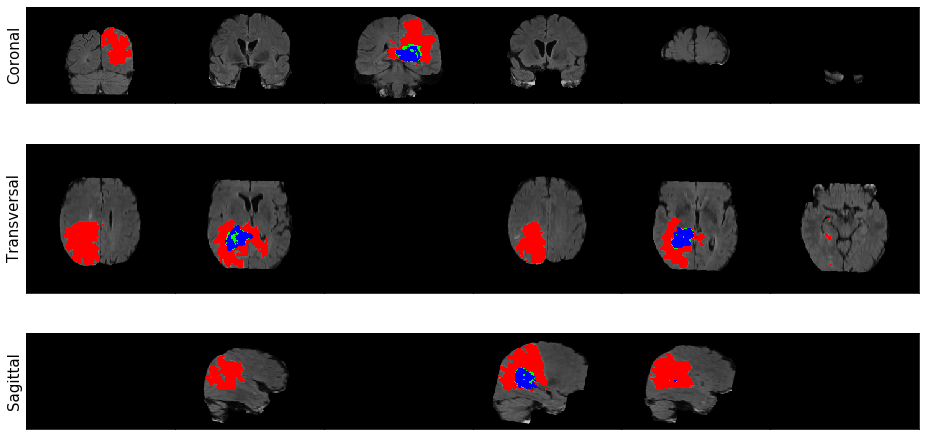
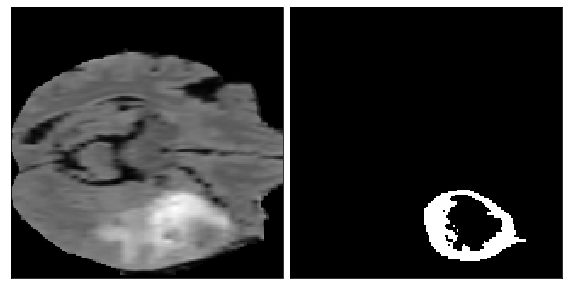
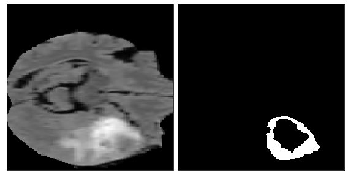
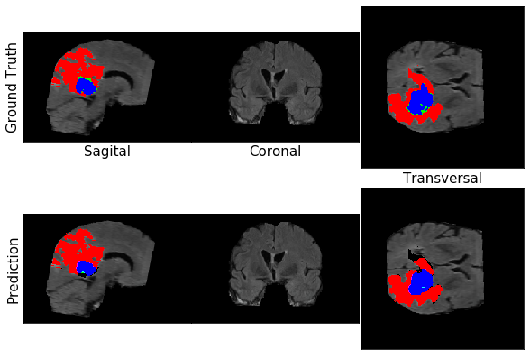

Brain Tumor Auto-Segmentation for Magnetic Resonance Imaging (MRI)
Welcome to the final part of the “Artificial Intelligence for Medicine” course 1!
You will learn how to build a neural network to automatically segment tumor regions in brain, using MRI (Magnetic Resonance Imaging) scans.
The MRI scan is one of the most common image modalities that we encounter in the radiology field.
Other data modalities include:
In this assignment we will be focusing on MRIs but many of our learnings applies to other mentioned modalities as well. We’ll walk you through some of the steps of training a deep learning model for segmentation.
You will learn:
- What is in an MR image
- Standard data preparation techniques for MRI datasets
- Metrics and loss functions for segmentation
- Visualizing and evaluating segmentation models
Outline
Use these links to jump to particular sections of this assignment!
Packages
In this assignment, we’ll make use of the following packages:
kerasis a framework for building deep learning models.keras.backendallows us to perform math operations on tensors.nibabelwill let us extract the images and labels from the files in our dataset.numpyis a library for mathematical and scientific operations.pandasis what we’ll use to manipulate our data.
Import Packages
Run the next cell to import all the necessary packages, dependencies and custom util functions.
1 | import keras |
Using TensorFlow backend.
1 Dataset
1.1 What is an MRI?
Magnetic resonance imaging (MRI) is an advanced imaging technique that is used to observe a variety of diseases and parts of the body.
As we will see later, neural networks can analyze these images individually (as a radiologist would) or combine them into a single 3D volume to make predictions.
At a high level, MRI works by measuring the radio waves emitting by atoms subjected to a magnetic field.

In this assignment, we’ll build a multi-class segmentation model. We’ll identify 3 different abnormalities in each image: edemas, non-enhancing tumors, and enhancing tumors.
1.2 MRI Data Processing
We often encounter MR images in the DICOM format.
- The DICOM format is the output format for most commercial MRI scanners. This type of data can be processed using the pydicom Python library.
In this assignment, we will be using the data from the Decathlon 10 Challenge. This data has been mostly pre-processed for the competition participants, however in real practice, MRI data needs to be significantly pre-preprocessed before we can use it to train our models.
1.3 Exploring the Dataset
Our dataset is stored in the NifTI-1 format and we will be using the NiBabel library to interact with the files. Each training sample is composed of two separate files:
The first file is an image file containing a 4D array of MR image in the shape of (240, 240, 155, 4).
- The first 3 dimensions are the X, Y, and Z values for each point in the 3D volume, which is commonly called a voxel.
- The 4th dimension is the values for 4 different sequences
- 0: FLAIR: “Fluid Attenuated Inversion Recovery” (FLAIR)
- 1: T1w: “T1-weighted”
- 2: t1gd: “T1-weighted with gadolinium contrast enhancement” (T1-Gd)
- 3: T2w: “T2-weighted”
The second file in each training example is a label file containing a 3D array with the shape of (240, 240, 155).
- The integer values in this array indicate the “label” for each voxel in the corresponding image files:
- 0: background
- 1: edema
- 2: non-enhancing tumor
- 3: enhancing tumor
We have access to a total of 484 training images which we will be splitting into a training (80%) and validation (20%) dataset.
Let’s begin by looking at one single case and visualizing the data! You have access to 10 different cases via this notebook and we strongly encourage you to explore the data further on your own.
We’ll use the NiBabel library to load the image and label for a case. The function is shown below to give you a sense of how it works.
1 | # set home directory and data directory |
We’ll now visualize an example. For this, we use a pre-defined function we have written in the util.py file that uses matplotlib to generate a summary of the image.
The colors correspond to each class.
- Red is edema
- Green is a non-enhancing tumor
- Blue is an enhancing tumor.
Do feel free to look at this function at your own time to understand how this is achieved.
1 | image, label = load_case(DATA_DIR + "imagesTr/BRATS_003.nii.gz", DATA_DIR + "labelsTr/BRATS_003.nii.gz") |

We’ve also written a utility function which generates a GIF that shows what it looks like to iterate over each axis.
1 | image, label = load_case(DATA_DIR + "imagesTr/BRATS_003.nii.gz", DATA_DIR + "labelsTr/BRATS_003.nii.gz") |

Reminder: You can explore more images in the imagesTr directory by changing the image name file.
1.4 Data Preprocessing using patches
While our dataset is provided to us post-registration and in the NIfTI format, we still have to do some minor pre-processing before feeding the data to our model.
Generate sub-volumes
We are going to first generate “patches” of our data which you can think of as sub-volumes of the whole MR images.
- The reason that we are generating patches is because a network that can process the entire volume at once will simply not fit inside our current environment’s memory/GPU.
- Therefore we will be using this common technique to generate spatially consistent sub-volumes of our data, which can be fed into our network.
- Specifically, we will be generating randomly sampled sub-volumes of shape [160, 160, 16] from our images.
- Furthermore, given that a large portion of the MRI volumes are just brain tissue or black background without any tumors, we want to make sure that we pick patches that at least include some amount of tumor data.
- Therefore, we are only going to pick patches that have at most 95% non-tumor regions (so at least 5% tumor).
- We do this by filtering the volumes based on the values present in the background labels.
Standardization (mean 0, stdev 1)
Lastly, given that the values in MR images cover a very wide range, we will standardize the values to have a mean of zero and standard deviation of 1.
- This is a common technique in deep image processing since standardization makes it much easier for the network to learn.
Let’s walk through these steps in the following exercises.
1.4.1 Sub-volume Sampling
Fill in the function below takes in:
- a 4D image (shape: [240, 240, 155, 4])
- its 3D label (shape: [240, 240, 155]) arrays,
The function returns:
- A randomly generated sub-volume of size [160, 160, 16]
- Its corresponding label in a 1-hot format which has the shape [3, 160, 160, 160]
Additionally:
- Make sure that at most 95% of the returned patch is non-tumor regions.
- Given that our network expects the channels for our images to appear as the first dimension (instead of the last one in our current setting) reorder the dimensions of the image to have the channels appear as the first dimension.
- Reorder the dimensions of the label array to have the first dimension as the classes (instead of the last one in our current setting)
- Reduce the labels array dimension to only include the non-background classes (total of 3 instead of 4)
- Check the lecture notebook for a similar example in 1 dimension
- To check the ratio of background to the whole sub-volume, the numerator is the number of background labels in the sub-volume. The last dimension of the label array at index 0 contains the labels to identify whether the voxel is a background (value of 1) or not a a background (value of 0).
- For the denominator of the background ratio, this is the volume of the output (see
output_x,output_y,output_zin the function parameters). - keras.utils.to_categorical(y, num_classes=)
- np.moveaxis can help you re-arrange the dimensions of the arrays
- np.random.randint for random sampling
- When taking a subset of the label
'y'that excludes the background class, remember which dimension contains the'num_classes'channel after re-ordering the axes.
1 | # UNQ_C1 (UNIQUE CELL IDENTIFIER, DO NOT EDIT) |
Test Case:
1 | np.random.seed(3) |
image:
z = 0
[[0. 0. 0. 0.]
[0. 0. 0. 0.]
[0. 0. 0. 0.]
[0. 0. 0. 0.]]
z = 1
[[0. 0. 0. 0.]
[0. 1. 2. 3.]
[0. 2. 4. 6.]
[0. 3. 6. 9.]]
z = 2
[[ 0. 0. 0. 0.]
[ 0. 2. 4. 6.]
[ 0. 4. 8. 12.]
[ 0. 6. 12. 18.]]
label:
z = 0
[[0. 0. 0. 0.]
[0. 0. 0. 0.]
[0. 0. 0. 0.]
[0. 0. 0. 0.]]
z = 1
[[1. 1. 1. 1.]
[1. 1. 1. 1.]
[1. 1. 1. 1.]
[1. 1. 1. 1.]]
z = 2
[[2. 2. 2. 2.]
[2. 2. 2. 2.]
[2. 2. 2. 2.]
[2. 2. 2. 2.]]
Test: Extracting (2, 2, 2) sub-volume
1 | sample_image, sample_label = get_sub_volume(image, |
Sampled Image:
z = 0
[[0. 2.]
[0. 3.]]
z = 1
[[0. 4.]
[0. 6.]]
Expected output:
1 | Sampled Image: |
1 | print("Sampled Label:") |
Sampled Label:
class = 0
z = 0
[[1. 1.]
[1. 1.]]
z = 1
[[0. 0.]
[0. 0.]]
class = 1
z = 0
[[0. 0.]
[0. 0.]]
z = 1
[[1. 1.]
[1. 1.]]
Expected output:
1 | Sampled Label: |
You can run the following cell to look at a candidate patch and ensure that the function works correctly. We’ll look at the enhancing tumor part of the label.
1 | image, label = load_case(DATA_DIR + "imagesTr/BRATS_001.nii.gz", DATA_DIR + "labelsTr/BRATS_001.nii.gz") |

1.4.2 Standardization
Next, fill in the following function that given a patch (sub-volume), standardizes the values across each channel and each Z plane to have a mean of zero and standard deviation of 1.
- Check that the standard deviation is not zero before dividing by it.
1 | # UNQ_C2 (UNIQUE CELL IDENTIFIER, DO NOT EDIT) |
And to sanity check, let’s look at the output of our function:
1 | X_norm = standardize(X) |
standard deviation for a slice should be 1.0
stddv for X_norm[0, :, :, 0]: 1.00
Let’s visualize our patch again just to make sure (it won’t look different since the imshow function we use to visualize automatically normalizes the pixels when displaying in black and white).
1 | util.visualize_patch(X_norm[0, :, :, :], y[2]) |

2 Model: 3D U-Net
Now let’s build our model. In this assignment we will be building a 3D U-net.
- This architecture will take advantage of the volumetric shape of MR images and is one of the best performing models for this task.
- Feel free to familiarize yourself with the architecture by reading this paper.

3 Metrics
3.1 Dice Similarity Coefficient
Aside from the architecture, one of the most important elements of any deep learning method is the choice of our loss function.
A natural choice that you may be familiar with is the cross-entropy loss function.
- However, this loss function is not ideal for segmentation tasks due to heavy class imbalance (there are typically not many positive regions).
A much more common loss for segmentation tasks is the Dice similarity coefficient, which is a measure of how well two contours overlap.
- The Dice index ranges from 0 (complete mismatch)
- To 1 (perfect match).
In general, for two sets $A$ and $B$, the Dice similarity coefficient is defined as:
Here we can interpret $A$ and $B$ as sets of voxels, $A$ being the predicted tumor region and $B$ being the ground truth.
Our model will map each voxel to 0 or 1
- 0 means it is a background voxel
- 1 means it is part of the segmented region.
In the dice coefficient, the variables in the formula are:
- $x$ : the input image
- $f(x)$ : the model output (prediction)
- $y$ : the label (actual ground truth)
The dice coefficient “DSC” is:
- $\epsilon$ is a small number that is added to avoid division by zero
Implement the dice coefficient for a single output class below.
- Please use the Keras.sum(x,axis=) function to compute the numerator and denominator of the dice coefficient.
1 | # UNQ_C3 (UNIQUE CELL IDENTIFIER, DO NOT EDIT) |
1 | # TEST CASES |
Test Case #1
pred:
[[1. 0.]
[0. 1.]]
label:
[[1. 1.]
[0. 0.]]
dice coefficient: 0.6000
Test Case #2
pred:
[[1. 0.]
[0. 1.]]
label:
[[1. 1.]
[0. 1.]]
dice_coefficient: 0.8333
Expected output
If you get a different result, please check that you implemented the equation completely.1
2
3
4
5
6
7
8
9
10
11
12
13
14
15
16
17
18Test Case #1
pred:
[[1. 0.]
[0. 1.]]
label:
[[1. 1.]
[0. 0.]]
dice coefficient: 0.6000
Test Case #2
pred:
[[1. 0.]
[0. 1.]]
label:
[[1. 1.]
[0. 1.]]
dice_coefficient: 0.8333
Dice Coefficient for Multiple classes
Now that we have the single class case, we can think about how to approach the multi class context.
- Remember that for this task, we want segmentations for each of the 3 classes of abnormality (edema, enhancing tumor, non-enhancing tumor).
- This will give us 3 different dice coefficients (one for each abnormality class).
- To combine these, we can just take the average. We can write that the overall dice coefficient is:
- $DC_{1}$, $DC_{2}$ and $DC_{3}$ are edema, enhancing tumor, and non-enhancing tumor dice coefficients.
For any number of classes, the equation becomes:
In this case, with three categories, $C = 3$
Implement the mean dice coefficient below. This should not be very different from your singe-class implementation.
Please use the K.mean function to take the average of the three classes.
- Apply the mean to the ratio that you calculate in the last line of code that you’ll implement.
1 | # UNQ_C4 (UNIQUE CELL IDENTIFIER, DO NOT EDIT) |
1 | # TEST CASES |
Test Case #1
pred:
[[1. 0.]
[0. 1.]]
label:
[[1. 1.]
[0. 0.]]
dice coefficient: 0.6000
Test Case #2
pred:
[[1. 0.]
[0. 1.]]
label:
[[1. 1.]
[0. 1.]]
dice coefficient: 0.8333
Test Case #3
pred:
class = 0
[[1. 0.]
[0. 1.]]
class = 1
[[1. 0.]
[0. 1.]]
label:
class = 0
[[1. 1.]
[0. 0.]]
class = 1
[[1. 1.]
[0. 1.]]
dice coefficient: 0.7167
Expected output:
1 | Test Case #1 |
3.2 Soft Dice Loss
While the Dice Coefficient makes intuitive sense, it is not the best for training.
- This is because it takes in discrete values (zeros and ones).
- The model outputs probabilities that each pixel is, say, a tumor or not, and we want to be able to backpropagate through those outputs.
Therefore, we need an analogue of the Dice loss which takes real valued input. This is where the Soft Dice loss comes in. The formula is:
- $p$ is our predictions
- $q$ is the ground truth
- In practice each $q_i$ will either be 0 or 1.
- $\epsilon$ is a small number that is added to avoid division by zero
The soft Dice loss ranges between
- 0: perfectly matching the ground truth distribution $q$
- 1: complete mismatch with the ground truth.
You can also check that if $p_i$ and $q_i$ are each 0 or 1, then the soft Dice loss is just one minus the dice coefficient.
Multi-Class Soft Dice Loss
We’ve explained the single class case for simplicity, but the multi-class generalization is exactly the same as that of the dice coefficient.
- Since you’ve already implemented the multi-class dice coefficient, we’ll have you jump directly to the multi-class soft dice loss.
For any number of categories of diseases, the expression becomes:
Please implement the soft dice loss below!
As before, you will use K.mean()
- Apply the average the mean to ratio that you’ll calculate in the last line of code that you’ll implement.
1 | # UNQ_C5 (UNIQUE CELL IDENTIFIER, DO NOT EDIT) |
Test Case 1
1 | # TEST CASES |
Test Case #1
pred:
[[1. 0.]
[0. 1.]]
label:
[[1. 1.]
[0. 0.]]
soft dice loss:0.4000
Expected output:
1 | Test Case #1 |
Test Case 2
1 | sess = K.get_session() |
Test Case #2
pred:
[[0.5 0. ]
[0. 0.5]]
label:
[[1. 1.]
[0. 0.]]
soft dice loss: 0.4286
Expected output:
1 | Test Case #2 |
Test Case 3
1 | sess = K.get_session() |
Test Case #3
pred:
[[1. 0.]
[0. 1.]]
label:
[[1. 1.]
[0. 1.]]
soft dice loss: 0.1667
Expected output:
1 | Test Case #3 |
Test Case 4
1 | sess = K.get_session() |
Test Case #4
pred:
[[1. 0.8]
[0. 1. ]]
label:
[[1. 1.]
[0. 1.]]
soft dice loss: 0.0060
Expected output:
1 | Test Case #4 |
Test Case 5
1 | sess = K.get_session() |
Test Case #5
pred:
class = 0
[[0.5 0. ]
[0. 0.5]]
class = 1
[[1. 0.8]
[0. 1. ]]
label:
class = 0
[[1. 1.]
[0. 0.]]
class = 1
[[1. 1.]
[0. 1.]]
soft dice loss: 0.2173
Expected output:
1 | Test Case #5 |
Test Case 6
1 | # Test case 6 |
Test case #6
soft dice loss 0.4375
Expected Output
1 | Test case #6 |
Note, if you don’t have a scalar, and have an array with more than one value, please check your implementation!
4 Create and Train the model
Once you’ve finished implementing the soft dice loss, we can create the model!
We’ll use the unet_model_3d function in utils which we implemented for you.
- This creates the model architecture and compiles the model with the specified loss functions and metrics.
- Check out function
util.unet_model_3d(loss_function)in theutil.pyfile.
1 | model = util.unet_model_3d(loss_function=soft_dice_loss, metrics=[dice_coefficient]) |
WARNING:tensorflow:From /opt/conda/lib/python3.6/site-packages/tensorflow_core/python/ops/resource_variable_ops.py:1630: calling BaseResourceVariable.__init__ (from tensorflow.python.ops.resource_variable_ops) with constraint is deprecated and will be removed in a future version.
Instructions for updating:
If using Keras pass *_constraint arguments to layers.
4.1 Training on a Large Dataset
In order to facilitate the training on the large dataset:
- We have pre-processed the entire dataset into patches and stored the patches in the
h5pyformat. - We also wrote a custom Keras
Sequenceclass which can be used as aGeneratorfor the keras model to train on large datasets. - Feel free to look at the
VolumeDataGeneratorclass inutil.pyto learn about how such a generator can be coded.
Note: Here you can check the difference between fit and fit_generator functions.
To get a flavor of the training on the larger dataset, you can run the following cell to train the model on a small subset of the dataset (85 patches). You should see the loss going down and the dice coefficient going up.
Running model.fit() on the Coursera workspace may cause the kernel to die.
- Soon, we will load a pre-trained version of this model, so that you don’t need to train the model on this workspace.
1 | # Run this on your local machine only |
4.2 Loading a Pre-Trained Model
As in assignment 1, instead of having the model train for longer, we’ll give you access to a pretrained version. We’ll use this to extract predictions and measure performance.
1 | # run this cell if you didn't run the training cell in section 4.1 |
1 | model.load_weights(HOME_DIR + "model_pretrained.hdf5") |
1 | model.summary() |
Model: "model_1"
__________________________________________________________________________________________________
Layer (type) Output Shape Param # Connected to
==================================================================================================
input_1 (InputLayer) (None, 4, 160, 160, 0
__________________________________________________________________________________________________
conv3d_1 (Conv3D) (None, 32, 160, 160, 3488 input_1[0][0]
__________________________________________________________________________________________________
activation_1 (Activation) (None, 32, 160, 160, 0 conv3d_1[0][0]
__________________________________________________________________________________________________
conv3d_2 (Conv3D) (None, 64, 160, 160, 55360 activation_1[0][0]
__________________________________________________________________________________________________
activation_2 (Activation) (None, 64, 160, 160, 0 conv3d_2[0][0]
__________________________________________________________________________________________________
max_pooling3d_1 (MaxPooling3D) (None, 64, 80, 80, 8 0 activation_2[0][0]
__________________________________________________________________________________________________
conv3d_3 (Conv3D) (None, 64, 80, 80, 8 110656 max_pooling3d_1[0][0]
__________________________________________________________________________________________________
activation_3 (Activation) (None, 64, 80, 80, 8 0 conv3d_3[0][0]
__________________________________________________________________________________________________
conv3d_4 (Conv3D) (None, 128, 80, 80, 221312 activation_3[0][0]
__________________________________________________________________________________________________
activation_4 (Activation) (None, 128, 80, 80, 0 conv3d_4[0][0]
__________________________________________________________________________________________________
max_pooling3d_2 (MaxPooling3D) (None, 128, 40, 40, 0 activation_4[0][0]
__________________________________________________________________________________________________
conv3d_5 (Conv3D) (None, 128, 40, 40, 442496 max_pooling3d_2[0][0]
__________________________________________________________________________________________________
activation_5 (Activation) (None, 128, 40, 40, 0 conv3d_5[0][0]
__________________________________________________________________________________________________
conv3d_6 (Conv3D) (None, 256, 40, 40, 884992 activation_5[0][0]
__________________________________________________________________________________________________
activation_6 (Activation) (None, 256, 40, 40, 0 conv3d_6[0][0]
__________________________________________________________________________________________________
max_pooling3d_3 (MaxPooling3D) (None, 256, 20, 20, 0 activation_6[0][0]
__________________________________________________________________________________________________
conv3d_7 (Conv3D) (None, 256, 20, 20, 1769728 max_pooling3d_3[0][0]
__________________________________________________________________________________________________
activation_7 (Activation) (None, 256, 20, 20, 0 conv3d_7[0][0]
__________________________________________________________________________________________________
conv3d_8 (Conv3D) (None, 512, 20, 20, 3539456 activation_7[0][0]
__________________________________________________________________________________________________
activation_8 (Activation) (None, 512, 20, 20, 0 conv3d_8[0][0]
__________________________________________________________________________________________________
up_sampling3d_1 (UpSampling3D) (None, 512, 40, 40, 0 activation_8[0][0]
__________________________________________________________________________________________________
concatenate_1 (Concatenate) (None, 768, 40, 40, 0 up_sampling3d_1[0][0]
activation_6[0][0]
__________________________________________________________________________________________________
conv3d_9 (Conv3D) (None, 256, 40, 40, 5308672 concatenate_1[0][0]
__________________________________________________________________________________________________
activation_9 (Activation) (None, 256, 40, 40, 0 conv3d_9[0][0]
__________________________________________________________________________________________________
conv3d_10 (Conv3D) (None, 256, 40, 40, 1769728 activation_9[0][0]
__________________________________________________________________________________________________
activation_10 (Activation) (None, 256, 40, 40, 0 conv3d_10[0][0]
__________________________________________________________________________________________________
up_sampling3d_2 (UpSampling3D) (None, 256, 80, 80, 0 activation_10[0][0]
__________________________________________________________________________________________________
concatenate_2 (Concatenate) (None, 384, 80, 80, 0 up_sampling3d_2[0][0]
activation_4[0][0]
__________________________________________________________________________________________________
conv3d_11 (Conv3D) (None, 128, 80, 80, 1327232 concatenate_2[0][0]
__________________________________________________________________________________________________
activation_11 (Activation) (None, 128, 80, 80, 0 conv3d_11[0][0]
__________________________________________________________________________________________________
conv3d_12 (Conv3D) (None, 128, 80, 80, 442496 activation_11[0][0]
__________________________________________________________________________________________________
activation_12 (Activation) (None, 128, 80, 80, 0 conv3d_12[0][0]
__________________________________________________________________________________________________
up_sampling3d_3 (UpSampling3D) (None, 128, 160, 160 0 activation_12[0][0]
__________________________________________________________________________________________________
concatenate_3 (Concatenate) (None, 192, 160, 160 0 up_sampling3d_3[0][0]
activation_2[0][0]
__________________________________________________________________________________________________
conv3d_13 (Conv3D) (None, 64, 160, 160, 331840 concatenate_3[0][0]
__________________________________________________________________________________________________
activation_13 (Activation) (None, 64, 160, 160, 0 conv3d_13[0][0]
__________________________________________________________________________________________________
conv3d_14 (Conv3D) (None, 64, 160, 160, 110656 activation_13[0][0]
__________________________________________________________________________________________________
activation_14 (Activation) (None, 64, 160, 160, 0 conv3d_14[0][0]
__________________________________________________________________________________________________
conv3d_15 (Conv3D) (None, 3, 160, 160, 195 activation_14[0][0]
__________________________________________________________________________________________________
activation_15 (Activation) (None, 3, 160, 160, 0 conv3d_15[0][0]
==================================================================================================
Total params: 16,318,307
Trainable params: 16,318,307
Non-trainable params: 0
__________________________________________________________________________________________________
5 Evaluation
Now that we have a trained model, we’ll learn to extract its predictions and evaluate its performance on scans from our validation set.
5.1 Overall Performance
First let’s measure the overall performance on the validation set.
- We can do this by calling the keras evaluate_generator function and passing in the validation generator, created in section 4.1.
Using the validation set for testing
- Note: since we didn’t do cross validation tuning on the final model, it’s okay to use the validation set.
- For real life implementations, however, you would want to do cross validation as usual to choose hyperparamters and then use a hold out test set to assess performance
Python Code for measuring the overall performance on the validation set:
1 | val_loss, val_dice = model.evaluate_generator(valid_generator) |
Expected output:
1 | validation soft dice loss: 0.4742 |
NOTE: Do not run the code shown above on the Coursera platform as it will exceed the platform’s memory limitations. However, you can run the code shown above locally on your machine or in Colab to practice measuring the overall performance on the validation set.
Like we mentioned above, due to memory limitiations on the Coursera platform we won’t be runing the above code, however, you should take note of the expected output below it. We should note that due to the randomness in choosing sub-volumes, the values for soft dice loss and dice coefficient will be different each time that you run it.
5.2 Patch-level predictions
When applying the model, we’ll want to look at segmentations for individual scans (entire scans, not just the sub-volumes)
- This will be a bit complicated because of our sub-volume approach.
- First let’s keep things simple and extract model predictions for sub-volumes.
- We can use the sub-volume which we extracted at the beginning of the assignment.
1 | util.visualize_patch(X_norm[0, :, :, :], y[2]) |

Add a ‘batch’ dimension
We can extract predictions by calling model.predict on the patch.
- We’ll add an
images_per_batchdimension, since thepredictmethod is written to take in batches. - The dimensions of the input should be
(images_per_batch, num_channels, x_dim, y_dim, z_dim). - Use numpy.expand_dims to add a new dimension as the zero-th dimension by setting axis=0
1 | X_norm_with_batch_dimension = np.expand_dims(X_norm, axis=0) |
Convert prediction from probability into a category
Currently, each element of patch_pred is a number between 0.0 and 1.0.
- Each number is the model’s confidence that a voxel is part of a given class.
- You will convert these to discrete 0 and 1 integers by using a threshold.
- We’ll use a threshold of 0.5.
- In real applications, you would tune this to achieve your required level of sensitivity or specificity.
1 | # set threshold. |
Now let’s visualize the original patch and ground truth alongside our thresholded predictions.
1 | print("Patch and ground truth") |
Patch and ground truth

Patch and prediction

Sensitivity and Specificity
The model is covering some of the relevant areas, but it’s definitely not perfect.
- To quantify its performance, we can use per-pixel sensitivity and specificity.
Recall that in terms of the true positives, true negatives, false positives, and false negatives,
Below let’s write a function to compute the sensitivity and specificity per output class.
- Recall that a true positive occurs when the class prediction is equal to 1, and the class label is also equal to 1
- Use numpy.sum()
1 | # UNQ_C6 (UNIQUE CELL IDENTIFIER, DO NOT EDIT) |
1 | # TEST CASES |
Test Case #1
pred:
[[1. 0.]
[0. 1.]]
label:
[[1. 1.]
[0. 0.]]
sensitivity: 0.5000
specificity: 0.5000
Expected output:
1 | Test Case #1 |
1 | print("Test Case #2") |
Test Case #2
pred:
[[1. 0.]
[0. 1.]]
label:
[[1. 1.]
[0. 1.]]
sensitivity: 0.6667
specificity: 1.0000
Expected output:
1 | Test Case #2 |
1 | # Note: we must explicity import 'display' in order for the autograder to compile the submitted code |
Test Case #3
| y_test | preds_test | category | |
|---|---|---|---|
| 0 | 1 | 1 | TP |
| 1 | 1 | 1 | TP |
| 2 | 0 | 0 | TN |
| 3 | 0 | 0 | TN |
| 4 | 0 | 0 | TN |
| 5 | 0 | 1 | FP |
| 6 | 0 | 1 | FP |
| 7 | 0 | 1 | FP |
| 8 | 0 | 1 | FP |
| 9 | 1 | 0 | FN |
| 10 | 1 | 0 | FN |
| 11 | 1 | 0 | FN |
| 12 | 1 | 0 | FN |
| 13 | 1 | 0 | FN |
sensitivity: 0.2857
specificity: 0.4286
Expected Output
1 | Test case #3 |
Sensitivity and Specificity for the patch prediction
Next let’s compute the sensitivity and specificity on that patch for expanding tumors.
1 | sensitivity, specificity = compute_class_sens_spec(patch_pred[0], y, 2) |
Sensitivity: 0.8049
Specificity: 0.9924
Expected output:
1 | Sensitivity: 0.7891 |
We can also display the sensitivity and specificity for each class.
1 | def get_sens_spec_df(pred, label): |
1 | df = get_sens_spec_df(patch_pred[0], y) |
Edema Non-Enhancing Tumor Enhancing Tumor
Sensitivity 0.8746 0.9419 0.8049
Specificity 0.97 0.9957 0.9924
Expected output
1 | Edema Non-Enhancing Tumor Enhancing Tumor |
5.3 Running on entire scans
As of now, our model just runs on patches, but what we really want to see is our model’s result on a whole MRI scan.
- To do this, generate patches for the scan.
- Then we run the model on the patches.
- Then combine the results together to get a fully labeled MR image.
The output of our model will be a 4D array with 3 probability values for each voxel in our data.
- We then can use a threshold (which you can find by a calibration process) to decide whether or not to report a label for each voxel.
We have written a function that stitches the patches together: predict_and_viz(image, label, model, threshold)
- Inputs: an image, label and model.
- Ouputs: the model prediction over the whole image, and a visual of the ground truth and prediction.
Run the following cell to see this function in action!
Note: the prediction takes some time!
- The first prediction will take about 7 to 8 minutes to run.
- You can skip running this first prediction to save time.
1 | # uncomment this code to run it |
Here’s a second prediction.
- Takes about 7 to 8 minutes to run
Please run this second prediction so that we can check the predictions.
1 | import sys |
285696144
1 | image, label = load_case(DATA_DIR + "imagesTr/BRATS_003.nii.gz", DATA_DIR + "labelsTr/BRATS_003.nii.gz") |

Check how well the predictions do
We can see some of the discrepancies between the model and the ground truth visually.
- We can also use the functions we wrote previously to compute sensitivity and specificity for each class over the whole scan.
- First we need to format the label and prediction to match our functions expect.
1 | whole_scan_label = keras.utils.to_categorical(label, num_classes = 4) |
Now we can compute sensitivity and specificity for each class just like before.
1 | whole_scan_df = get_sens_spec_df(whole_scan_pred, whole_scan_label) |
Edema Non-Enhancing Tumor Enhancing Tumor
Sensitivity 0.902 0.2617 0.8496
Specificity 0.9894 0.9998 0.9982
That’s all for now!
Congratulations on finishing this challenging assignment! You now know all the basics for building a neural auto-segmentation model for MRI images. We hope that you end up using these skills on interesting and challenging problems that you face in the real world.
1 |